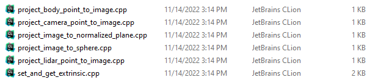

Camera calibration results description
Storage path
The calibration results of the current mining cars (7185C/8328C/9477C) and engineering vehicles (8626C/9884C/10162C) are all stored in: \\ \ \ bosch.com\dfsrb\DfsCN\DIV\XC\Engineering\domain\WAVE3\04_PER\05_maploc\00_dataset\data_format\dongshahu
Path structure
Taking 9884C as an example, the documents related to the calibration results have been marked:
9884c
| - → 20220919 #calibration data collection date
| - → | - → Calibration #collection of calibration data
| - → | - → | - → IMAGE #Collected picture calibration data
| - → | - → | - → → PCD #| | | | | |
| - → | - → Evaluation #Outdoor verification data collected
| - → | - → | - → POS1 #The verification data of the first position
| - → | - → | - → POS2 #Verification data at the second position
| - → | - → xxtrinsic #calibration results
| - → | - → | - → KB8 #Camera Internal Reference and External Reference
| - → | - → | - → Mei #Camera internal reference and External Reference
| - → | - → | - → OCAM #The camera internal parameters and external parameters represented by the OCAM model
| - → | - → | - → Pinhole #The camera internal and external parameters represented by the Pinhole model
| - → | - → | - → lidar_extrinsic.yaml # Laser's calibration results
| - → | - → | - → Body_extrinsic.yaml #| | | | The calibration result of projection coordinate system on the ground
| - → | - → bev #bev stitching parameters
Sensor installation design drawing
Introduction to calibration file format
Rear axle
At each time, the rear axis position is basically fixed.
Among them, T_W_BODY is a calibration, the position of the RAR AXLE center in the setting of the setting of the ground in the calibration room
camera
The calibration results are provided in the form of Internet reference + External Reference. There are in the same Yaml file. When using an internal reference, use the External Reference of the Camera in the same file.
Internal reference
Different Camera model calibration results are provided according to different types of each Camera
|
|
Forever Vision wide -angle |
Front fishy |
Right fish eye |
Rear fish eye |
Left fish eye |
Forefocus |
Left before |
Right front week |
Left behind Zhou Shi |
Right back Zhou Shi |
rearview |
|
pinhole |
|
|
|
|
|
|
|
|
|
|
|
|
ocam |
|
|
|
|
|
|
|
|
|
|
|
|
kb8 |
|
|
|
|
|
|
|
|
|
|
|
|
mei |
|
|
|
|
|
|
|
|
|
|
|
Precautions:
The empty lattice is not the labeled, but the effect is not good, so it is not marked by default. If the result of the empty grid is required, you need to contact the person to calibrate
Because of its large FOV, the front vision wide -angle is placed after the windshield, and the current treatment of windshield is not very complete. It is not recommended to use the PINHOLE model.
External reference
Provide T_W_C matrix, which represents the position of the Camera coordinate system under the coordinate system of the calibration room when calibration
laser
External reference
Provide the T_W_L matrix, which represents the position of the laser coordinate system under the coordinate system of the calibration room when the calibration is calibrated.
T_w_l0: Ruby 360° lidar
T_w_l1: M1front lidar
T_w_l2: M1left lidar
T_w_l3: M1right lidar
Projection and coordinates conversion
Siter conversion script
Script Path: \\ bosch.com\dfsrb\DfsCN\DIV\XC\Engineering\domain\WAVE3\04_PER\05_maploc\00_dataset\data_format\dongshahu\tools\convert_extrinsic.py
If you need to obtain an external parameters between A and B ( A and b can be laser 、 camera 、 Rear axle ), You can run the script in the following form
python3 convert_extrinsic.py A_path B_path
A_Path and B_Path are their respective calibration files.
Projection and position conversion library
path:\\ bosch.com\dfsrb\DfsCN\DIV\XC\Engineering\domain\WAVE3\04_PER\05_maploc\00_dataset\data_format\dongshahu\tools\calibration_user_lib
First compile Project and Coordinates Conversion library libcamera_models.so
mkdir build
cd build
cmake ..
make -j4
Combined with the header file Camera.h, the call method can refer

The complete API of all functions can refer to the index.html in the document